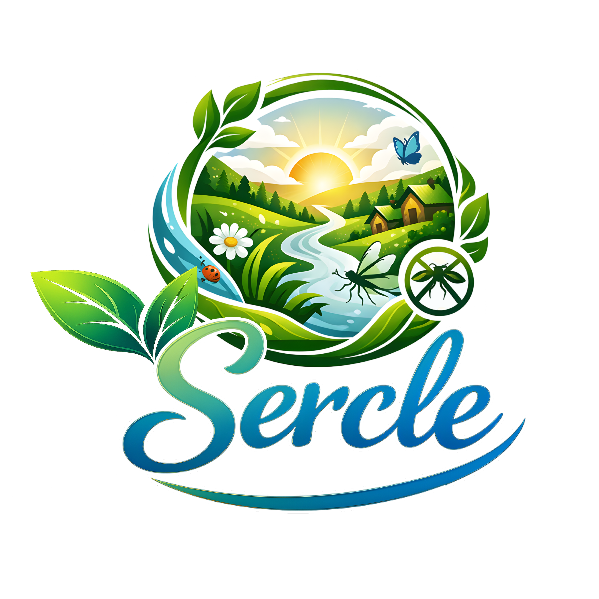

Sercle menghadirkan semprotan pengusir serangga berbahan citrus dan herbal, aman untuk keluarga dan ramah lingkungan.

Sercle hadir sebagai alternatif berbahan alami untuk membantu menciptakan ruang yang lebih nyaman tanpa bergantung pada bahan kimia sintetis yang keras. Salah satu pendekatan yang kami gunakan adalah memanfaatkan ekstrak dari limbah kulit jeruk sebagai bahan utama. Selain dikenal memiliki aroma segar alami, pemanfaatan kulit jeruk juga menjadi bagian dari upaya kami untuk mengurangi limbah dan menghadirkan solusi yang lebih berkelanjutan.
Menggabungkan ekstrak kulit jeruk, sereh, cengkeh, dan kayu manis, Sercle dirancang untuk memberikan perlindungan alami dengan aroma herbal yang menyegarkan.
Sercle diformulasikan dengan kombinasi ekstrak tumbuhan dan bahan pendukung yang digunakan untuk menjaga stabilitas serta kenyamanan penggunaan. Kami berupaya menyeimbangkan efektivitas dan pengalaman pemakaian secara proporsional.
Solusi modern untuk perlindungan alami tanpa bahan kimia keras.
Mengandung ekstrak sereh, cengkeh, kayu manis & citrus.
Tidak mengandung DEET atau bahan kimia keras.
Ramah lingkungan & biodegradable.
Wangi citrus & rempah yang menyegarkan.
Pesan sekarang dan rasakan perlindungan alami dari Sercle.
Pesan Sekarang